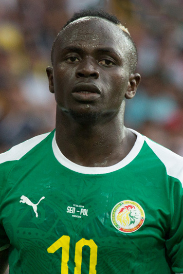

This is a paragraph.
Fußball Legende
Quelle: Link zum Bilds
Geburtstag 10. April 1992
Geburtsort Sédhiou, Senegal
Geburtsort Sédhiou, Senegal
Größe 175 cm
Position Linksaußen
Sadio Mané wechselte 2011 von Génération Foot aus dem Senegal nach Frankreich zum FC Metz. Im ersten halben Jahr kam er vorwiegend für die Jugend und Zweite Mannschaft zum Einsatz, ehe er am 14. Januar 2012 im Heimspiel gegen SC Bastia in der Ligue 2 debütierte. Er wurde zum Stammspieler und schließlich im Sommer 2012 für vier Millionen Euro von Red Bull Salzburg verpflichtet. In seinem dritten Einsatz für Salzburg erzielte Mané einen Doppelpack, und zwar beim 3:2-Heimsieg gegen SK Sturm Graz.[2] Mit 16 Toren in seiner ersten Saison bei Salzburg wurde er in der klubinternen Torschützenliste Zweiter hinter Jonathan Soriano. Vor dem Spiel für das Champions-League Play-Off am 27. August 2014 gegen Malmö FF entfernte sich Mané vom Training und blieb darauffolgenden Terminen fern, er wurde daraufhin aus dem Kader für das „wichtigste Spiel der Vereinsgeschichte“ gestrichen. Am 1. September 2014 verpflichtete der FC Southampton Mané für vier Jahre. Mit 11,8 Millionen Britischen Pfund (etwa 15 Millionen Euro) war der Transfer in letzter Minute gleichzeitig auch der höchstdotierte der österreichischen Bundesliga.[4] Am 16. Mai 2015 erzielte Mané bei einem 6:1-Sieg gegen Aston Villa in weniger als drei Minuten den bis dahin schnellsten und frühesten Hattrick der Premier League. Am 28. Juni 2016 verpflichtete ihn der FC Liverpool. In seinem ersten Spiel erzielte er am 14. August 2016 sein erstes Tor im Premier-League-Spiel gegen den FC Arsenal mit dem Treffer zum 4:1. Im Champions-League-Finale 2018 gegen Real Madrid erzielte Mané bei der 1:3-Niederlage das Tor zum 1:1. Am 1. Juni 2019 gewann er mit dem FC Liverpool die UEFA Champions League 2018/2019 durch einen 2:0 Finalsieg gegen Tottenham Hotspur. Im Dezember 2019 konnte Mané mit Liverpool die FIFA-Klub-Weltmeisterschaft 2019 gegen Flamengo Rio de Janeiro mit 1:0 nach Verlängerung gewinnen.
Sadio Mané debütierte am 25. Mai 2012 im Spiel gegen Marokko für die Nationalmannschaft des Senegals. Sein erstes Tor erzielte er im Juni 2012 gegen Liberia. Er nahm mit dem Senegal an den Olympischen Sommerspielen 2012 in London teil und kam dabei viermal zum Einsatz. Bei der Afrikameisterschaft 2015 wurde Mané für den senegalesischen Kader berufen und kam auf zwei Einsätze, als sein Team letztendlich mit 4 Punkten aus dem Turnier ausschied. Zwei Jahre später, bei der Afrikameisterschaft 2017, wurde er erneut für den Kader berufen; Mané erzielte in den ersten beiden Gruppenspielen gegen Tunesien und Simbabwe jeweils ein Tor. Im Viertelfinale, beim 0:0 n. V. gegen Kamerun, ging es ins Elfmeterschießen; Mané verschoss den letzten und entscheidenden Elfmeter, sodass der Senegal ausschied. Bei der Fußball-Weltmeisterschaft 2018 gehörte er zum senegalesischen Aufgebot. Dort führte Mané sein Team im ersten und zweiten Gruppenspiel als Kapitän aufs Feld. Im zweiten Gruppenspiel, dem 2:2 gegen Japan, traf er zum zwischenzeitlichen 1:0. Beim Afrika-Cup 2019 in Ägypten gehörte Mané als wichtigster Spieler zum senegalesischen Aufgebot. Im letzten Gruppenspiel, beim 3:0-Sieg gegen Kenia, erzielte er zwei Treffer. Beim Achtelfinalspiel gegen Uganda, welches mit einem 1:0-Sieg endete, traf Mané erneut. Beim Viertelfinalspiel gegen Benin gab er die Vorlage zum 1:0-Endstand.
Privates Mané ist ein gläubiger Muslim und macht oft Du'a vor Beginn eines Spiels.[11] Er führte seine Karriere als Fußballer fort, obwohl es ihm sein Vater verbot. Manés Idole sind Ronaldinho und El Hadji Diouf. Er stellte seinem Heimatdorf Bambali einen Scheck im Wert von 230.000 Euro zur Verfügung, um den Bau einer weiterführenden Schule zu finanzieren. Sadio Mané ist nicht nur Fußballer, sondern auch leidenschaftlicher Koch und Musiker. In Bezug auf diese kulinarischen Hauptgeschmäcker sagt er, er habe eine Schwäche für Fisch, insbesondere für Lachs. Sein Lieblingskünstler ist Youssou N'Dour. Er ist einer der schnellsten Fußballspieler in der Premier League mit einem Geschwindigkeitsrekord von 34,84 km/h. Mane ist Angehöriger der Balanta-Ethnie.
{kind=link}